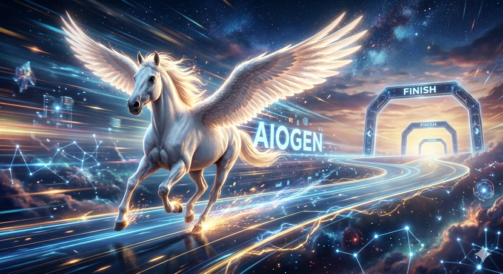

Compact core path
The inner-circle metric isolates the pure policy-logic path and measured a median latency of 0.1047 ms in this run.
This benchmark note shares one current checkpoint from AIOGen’s engineering journey. In an April 2026 pre-MVP benchmark, the system demonstrated sub-millisecond median policy-logic latency and low single-digit millisecond median full-handler latency under a defined k6 workload.

These results reflect the current state of the system at the time of measurement and do not represent the end of our optimization work. We focus on the "Inner Circle" to ensure the logic engine itself adds negligible overhead to your cluster.
The current pre-MVP run suggests that AIOGen’s core policy path can stay compact while keeping the full admission path within a low single-digit millisecond median under the stated test conditions. For platform teams, that matters because governance is easiest to adopt when it behaves like efficient infrastructure rather than recurring operational overhead.
The inner-circle metric isolates the pure policy-logic path and measured a median latency of 0.1047 ms in this run.
The outer-circle metric measures the full handler path and recorded a median latency of 3.5967 ms under the same workload.
AIOGen is still under active optimization, so these numbers should be read as a documented checkpoint rather than a final ceiling.
The chart below shows the shape of the latency curve from best-case to tail events. For context, AIOGen was measured on a 2-core setup, while the Kyverno reference comes from a published run on a 32-core environment.
Inner circle shows pure policy logic; outer circle shows the full admission path.
It often becomes overpriced when the cost of enforcement is measured only as a licensing line item and not as execution work inside the cluster. Every additional millisecond in the admission path represents compute time spent evaluating requests, holding resources, and reducing the amount of work the same hardware can process over time.
That is why latency matters beyond user experience across edge and cloud landscapes. In a busy Kubernetes environment, higher admission latency can translate into more CPU consumption, more memory pressure, more replicas to maintain throughput, and ultimately a higher infrastructure bill for the same governance outcome.
AIOGen’s benchmark story is aimed at that exact problem. If governance can execute with a smaller runtime footprint, then the platform team is not just reducing delay; it is reducing the compute cost of enforcement itself and making governance easier to justify operationally.
In an April 2026 pre-MVP benchmark using a k6 concurrent direct workload of 100 virtual users across 1000 requests, AIOGen measured a median pure policy-logic latency of 0.1047 ms and a median full-handler latency of 3.5967 ms. For public benchmarking context, Kyverno’s published 100 VUs / 1000 iterations benchmark reports avg=64.34 ms, min=13.06 ms, med=51.61 ms, max=236.42 ms, p(90)=120.99 ms, and p(95)=160.19 ms. These figures describe different systems under different published methodologies and should be read as benchmark context rather than as a universal claim across all deployments.
We are sharing these benchmark results to show where AIOGen stands today, not to suggest the journey is finished. Our focus remains on continuing to improve latency behavior, throughput efficiency, and deployment readiness as the product evolves.
Visible methodology text makes the page safer and more trustworthy because it anchors the claim to a defined test profile and a disclosed public reference.
| Item | Details |
|---|---|
| AIOGen workload | k6 concurrent direct benchmark |
| AIOGen load profile | 100 virtual users, 1000 requests |
| AIOGen inner-circle metric | symbol_latency, representing the pure policy-logic path |
| AIOGen outer-circle metric | total_handler_latency, representing the full admission handler path |
| AIOGen observed median | 0.1047 ms inner-circle, 3.5967 ms outer-circle |
| AIOGen observed average | 1.1845 ms inner-circle, 14.8061 ms outer-circle |
| Kyverno published benchmark [ref] | 100 virtual users / 1000 iterations, avg 64.34 ms, min 13.06 ms, median 51.61 ms, max 236.42 ms, p90 120.99 ms, p95 160.19 ms |
| Hardware context | AIOGen benchmark was run on a 2-core setup, while Kyverno’s published reference comes from a substantially larger 32-core environment. |